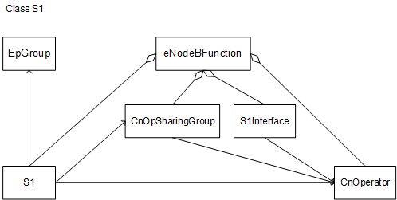
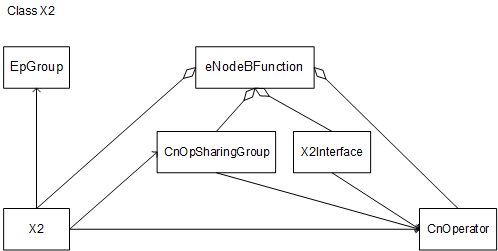
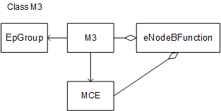
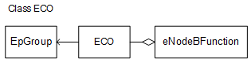
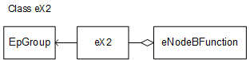

This section describes the functions and concepts of eNodeB
interfaces, including S1, X2, M2, M3, ECO, SO, eX2, and Xw interfaces. It also provides the managed object model (MOM) view and describes
the managed objects (MOs) related to the interfaces.
Functions and Concepts
S1 Interface
The S1
interface is between an eNodeB and the EPC, which can be an S1 control-plane
interface or S1 user-plane interface.
- The S1 control-plane interface (known as S1-C interface) is between
an eNodeB and a mobility management entity (MME) for transmitting
signaling.
- The S1 user-plane interface (known as S1-U interface) is between
an eNodeB and a serving gateway (S-GW) for transmitting user data.
X2 Interface
The X2 interface is between two eNodeBs or between an eNodeB and gNodeB, which can be an X2 control-plane interface or X2 user-plane interface.
- The X2 control-plane interface (known as X2-C interface) is between two eNodeBs or between an eNodeB and gNodeB for transmitting signaling.
- The X2 user-plane interface (known as X2-U interface) is between two eNodeBs or between an eNodeB and gNodeB for transmitting user data.
M2 Interface
The M2 interface is a control-plane
interface between an eNodeB and a Multicell/multicast Coordination
Entity (MCE) for transmitting evolved multimedia broadcast multicast
service (eMBMS) signaling.
M3 Interface
The M3 interface is
a control-plane interface between an MCE integrated in the eNodeB
and MME for transmitting eMBMS signaling.
ECO
Interface
The ECO interface is between an eNodeB and Huawei-proprietary
network element (NE) eCoordinator for transmitting signaling and user
data.
SO Interface
The SO interface is used for transmitting signaling and user
data between an eNodeB and service open platform SVA, which is a Huawei-proprietary
network element (NE).
eX2 Interface
The eX2 interface
is a Huawei-proprietary interface between eNodeBs for transmitting
service coordination signaling and user data, which can be an eX2
control-plane interface or eX2 user-plane interface.
- The eX2 control-plane interface (known as eX2-C interface) is
between eNodeBs for transmitting signaling.
- The eX2 user-plane interface (known as eX2-U interface) is between
eNodeBs for forwarding data.
Xw Interface
The Xw interface is between
an eNodeB and WLAN Terminator, which can be an Xw control-plane interface
or Xw user-plane interface.
- The Xw control-plane interface (known as Xw-C interface) is between
an eNodeB and WLAN Terminator for transmitting signaling.
- The Xw user-plane interface (known as Xw-U interface) is between
an eNodeB and WLAN Terminator for forwarding user data.
Managed Object Model
S1 Interface MOM
Figure 1 shows the S1 interface MOM, which
is a subset of the eNodeB MOM.
Figure 1 S1 Interface MOM

MOs related to an S1 interface are defined as follows:
- An S1 MO consists of user-configured
parameters related to the transport resources for an S1 interface,
including the control- and user-plane end point groups used by the
S1 MO and the operator who owns the MO.
- An S1Interface MO consists
of user-configured parameters related to an S1 interface. The parameters
specify information about the S1 interface and the MME, including
the control port (CP) bearer used for the S1 interface, the operator
to which the S1 interface belongs, and the global unique MME identifier
(GUMMEI) and public land mobile network (PLMN) ID of the MME.
- An EpGroup MO defines
a transmission end point group, which can include either control-plane
end points or user-plane end points, or include both types of end
points.
- A CnOpSharingGroup MO defines a RAN sharing operator group. A RAN sharing operator
group consists of a primary operator and a maximum of five secondary
operators. An operator can belong to multiple groups but the primary
operator of each group must be unique.
- A CnOperator MO defines
an operator. A maximum of six operators (including one primary operator)
can share resources of an eNodeB.
- The eNodeBFunction MO is the root node of an eNodeB function domain. This MO provides
the radio access functions for an eNodeB, which involve radio resource
management functions such as air interface management, access control,
mobility control, and UE resource allocation.
X2 Interface MOM
Figure 2 shows the X2 interface MOM, which is a subset of the eNodeB
MOM.
Figure 2 X2 Interface MOM

MOs related to an X2 interface are defined as follows:
- An X2 MO consists of user-configured
parameters related to the transport resources for an X2 interface
between eNodeBs, including the control- and user-plane end point groups
used by the X2 MO and the operator who owns the MO.
- An X2Interface MO consists
of user-configured parameters related to an X2 interface between eNodeBs.
The parameters specify information about the X2 interface and the
peer eNodeB, including the CP bearer used for the X2 interface, the
operator to which the X2 interface belongs, and the ID of the peer
eNodeB.
- An EpGroup MO defines
a transmission end point group, which can include either control-plane
end points or user-plane end points, or include both types of end
points.
- A CnOpSharingGroup MO defines a RAN sharing operator group. A RAN sharing operator
group consists of a primary operator and a maximum of five secondary
operators. An operator can belong to multiple groups but the primary
operator of each group must be unique.
- A CnOperator MO defines
an operator. A maximum of six operators (including one primary operator)
can share resources of an eNodeB.
- The eNodeBFunction MO is the root node of an eNodeB function domain. This MO provides
the radio access functions for an eNodeB, which involve radio resource
management functions such as air interface management, access control,
mobility control, and UE resource allocation.
M2 Interface MOM
Figure 3 shows the M2 interface MOM, which is a subset of the eNodeB
MOM.
Figure 3 M2 Interface MOM
MOs related to an M2 interface are defined as follows:
- An M2 MO consists of parameters
related to the transport resources for an M2 interface.
- An EpGroup MO defines a control-plane transmission endpoint
group fo an M2 interface.
- The eNodeBFunction MO is the root node of an eNodeB function domain. This MO provides
the radio access functions for an eNodeB, which involve radio resource
management functions such as air interface management, access control,
mobility control, and UE resource allocation.
M3 Interface
MOM
Figure 4 shows the M3 interface MOM,
which is a subset of the eNodeB MOM.
Figure 4 M3 interface MOM

MOs related to an M3 interface are defined as follows:
- An M3 MO consists of parameters
related to transport resources for an M3 interface.
- An EpGroup MO defines
a control-plane transmission endpoint group for an M3 interface.
- An MCE MO consists of parameters
related to the MCE used for eMBMS.
- The eNodeBFunction MO is the root node of an eNodeB function domain. This MO provides
the radio access functions for an eNodeB, which involve radio resource
management functions such as air interface management, access control,
mobility control, and UE resource allocation.
ECO Interface MOM
Figure 5 shows the ECO interface MOM, which is
a subset of the eNodeB MOM.
Figure 5 ECO Interface MOM

MOs related to an ECO interface are defined as follows:
- An ECO MO consists of parameters
related to the transport resources for an Se interface between an
eNodeB and Huawei-proprietary eCoordinator.
- An EpGroup MO defines
a transmission end point group, which can include either control-plane
end points or user-plane end points, or include both types of end
points.
- The eNodeBFunction MO is the root node of an eNodeB function domain. This MO provides
the radio access functions for an eNodeB, which involve radio resource
management functions such as air interface management, access control,
mobility control, and UE resource allocation.
SO Interface
MOM
Figure 6 shows the SO interface MOM,
which is a subset of the eNodeB MOM.
Figure 6 SO interface MOM
MOs related to an SO interface are defined as follows:
- An SO MO consists of parameters
related to the transport resources for an SO interface between an
eNodeB and Huawei-proprietary SVA.
- An EpGroup MO defines
a transmission endpoint group, which can include either control-plane
endpoints or user-plane endpoints, or include both types of endpoints.
- The eNodeBFunction MO is the root node of an eNodeB function domain. This MO provides
the radio access functions for an eNodeB, which involve radio resource
management functions such as air interface management, access control,
mobility control, and UE resource allocation.
eX2 Interface MOM
Figure 7 shows the eX2 interface MOM, which is a subset of the eNodeB MOM.
Figure 7 eX2 interface MOM

MOs related to an eX2 interface are defined as follows:
- An eX2 MO consists of parameters
related to the transport resources for an eX2 interface between eNodeBs.
- An EpGroup MO defines
a transmission endpoint group, which can include either control-plane
endpoints or user-plane endpoints, or include both types of endpoints.
- The eNodeBFunction MO is the root node of an eNodeB function domain. This MO provides
the radio access functions for an eNodeB, which involve radio resource
management functions such as air interface management, access control,
mobility control, and UE resource allocation.
Xw Interface MOM
Figure 8 shows the Xw interface MOM, which is a subset of the eNodeB MOM.
Figure 8 Xw interface MOM
MOs related to an Xw interface are defined as follows:
- An Xw MO consists of parameters
related to the transport resources for an Xw interface between an
eNodeB and WLAN Terminator.
- An EpGroup MO defines
a transmission endpoint group, which can include either control-plane
endpoints or user-plane endpoints, or include both types of endpoints.
- The eNodeBFunction MO is the root node of an eNodeB function domain. This MO provides
the radio access functions for an eNodeB, which involve radio resource
management functions such as air interface management, access control,
mobility control, and UE resource allocation.